A Comparison of NFSv4 rsize and wsize Values
Linux Software RAID Performance Comparisons (2012)
The Problem
Various web sites recommend very large rsize and wsize values (and
Linux defaults to 1MB).
The Controller
- LSI SAS9211-8i (SAS2008)
- 8 6Gbph ports
- PCIe 2.0
- Chipset: Fusion-MPT
- Linux driver: mpt2sas
- Cost: about $230 from amazon.com
- Configuration: JBOD
The Test System
- Motherboard: Supermicro MBD-H8DCL-IF-O
- Processors: Two 3.3GHz Opteron 4238 (Socket C32)
- RAM: 64GB 1600MHz DDR3 (PC3-12800)
- Slots: PCIe x8 (4000MB/s)
- Drives: Seagate Barracuda 7200 3000Gbytes ST3000DM001
- Drive cage: Supermicro CSE-M35T-1B 5-Bay Enclosure (fits in
three 5-inch chassis bays; sells for about $100-$120 from
newegg.com)
- Debian Wheezy, Linux 3.2.0-3-amd64
The Test Matrix
- Read Percentage: 100% (pure read), 0% (pure write)
- Random Percentage: 100% (random)
- Thread counts: 1
- Small block sizes: 4k, 8k, 16k, 32k, 64k, 128k, 256k, 512k,
1m, 2m, 4m
- Large block sizes: 4k, 8k, 16k, 32k, 64k, 128k, 256k, 512k,
1m, 2m, 4m, 8m, 16m, 32m, 64m, 128m, 256m, 512m, 1024m
- Targets: All 5 driver were tested simultaneously, as well as
each drive individually.
- All small block I/Os are issued using the O_DIRECT flag.
- All large block I/Os use a sequence of 8KB blocks, followed
by an fsync, followed by a seek to the next "large block". This
simulates random I/O at small block sizes and sequential I/O at
large block sizes. By not using O_DIRECT and calling fsync
instead, the Linux block system is tested, which simulated
real-world NFS performance.
- All tests last 30 seconds.
- Mount command: mount -t nfs4 dho:/ /mnt
-orsize=...,wsize=...,noatime,nodiratime,intr
- Wire speed is limited by 1gbe
Conclusion
For small block reads, r/wsize=32k should be avoided because 64k block
read performance is degraded. For small block writes, performance
was similar across r/wsizes, with 256k, 128k, and 1m performing
better at some load points.
Large block read performance showed significant differences with
changes in r/wsizes, with values ofr 32k, 64k, and 128k having the
highest and most consistent performance.
For large block writes, behavior for all r/wsizes is consistent.
Asynchronous (the "async" mount option) was disappointing. The
nfs server timed out often, making test results difficult to obtain
(those shown are the best of 2 runs, and even then, several data
points are missing). These timeouts may have been caused because
the underlying disc subsystem could not keep up with the pending IO
stream -- however, for large seuqential writes, our earlier
benchmarking showed local ext4fs performance several times higher
than wire speed. Even if this is the problem, NFS should not
timeout.
When asynchronous IO did not cause server timeouts, peak
sequential write throughput matched wire speed for smaller
sequences. Hence, bursts in IO may be easier to accept by the
server, but sustained IO caused timeouts instead of throttling,
which ended up decreasing overall throughput below fully synchronous
levels.
Based on various recommendations found on the Internet, another
asynchronous run was done with 32 server threads (vs. the default of
8) and with the following sysctl settings:
- sysctl net.core.rmem_default=8388608
- sysctl net.core.rmem_max=16777216
- sysctl net.core.wmem_default=8388608
- sysctl net.core.wmem_max=16777216
These settings did not eliminate timeouts. Further, an
additional run with synchronous IO showed no significant change in
IO behavior, as demonstrated at the 64KB r/wsize point in the graphs
below.
Recommendation: Avoid 32k and 1m. Use 64k or 128k. Use "sync" and
other defaults.
Synchronous
Small Block Tests
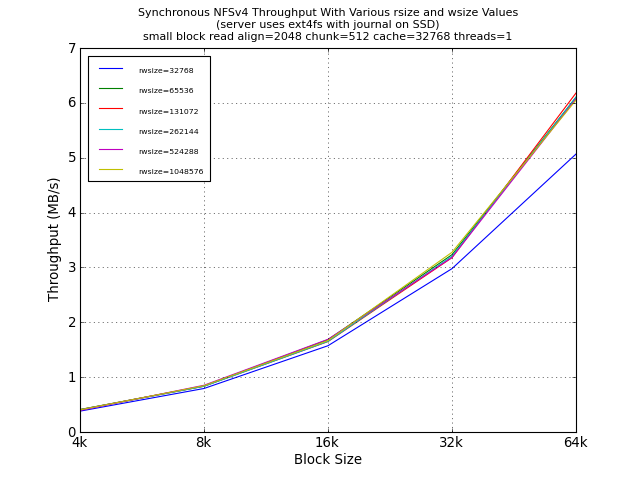
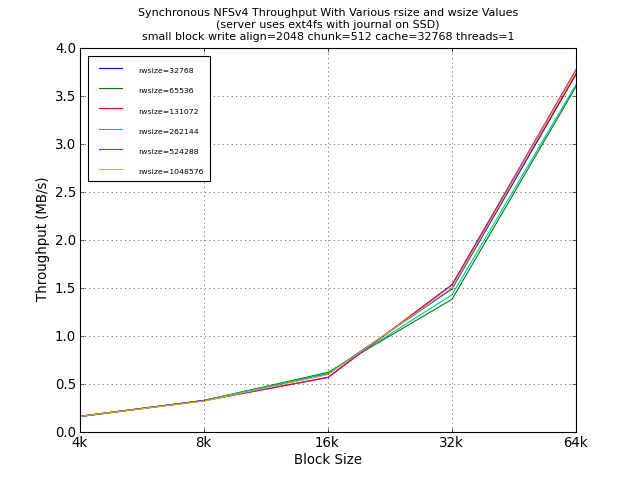
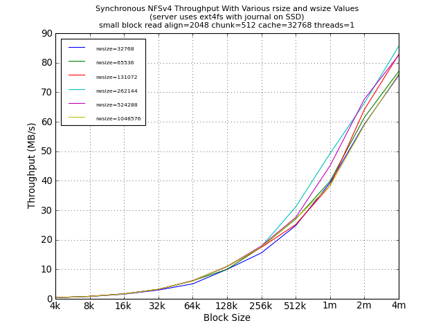
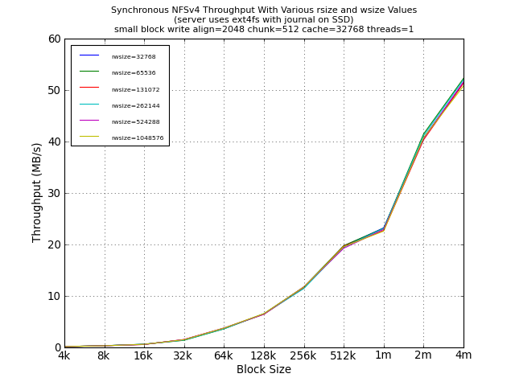
Large Block Tests
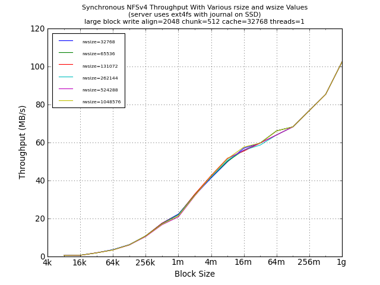
Asynchronous (SEE NOTE)
NOTE: With only 8 nfs threads on the server, there were
many NFS timeouts, resulting in poor performance. The following
graphs are made from two different run, taking the best value
between the two runs, and removing values that were obviously taken
during a timeout.
Small Block Tests
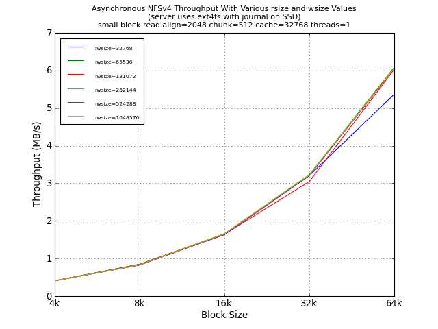
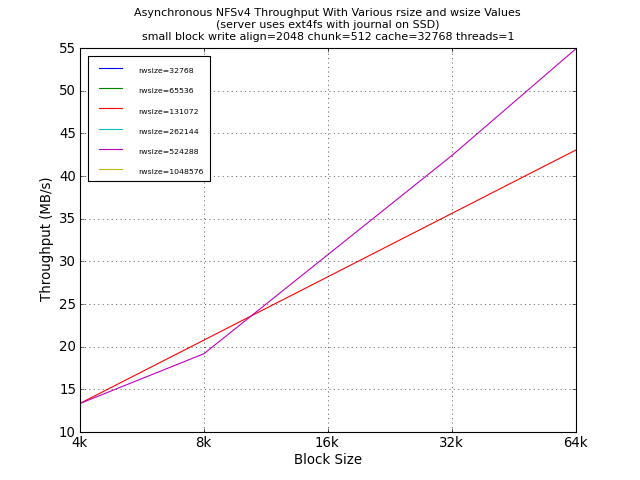
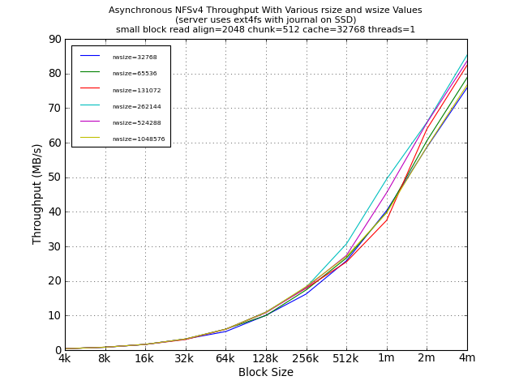
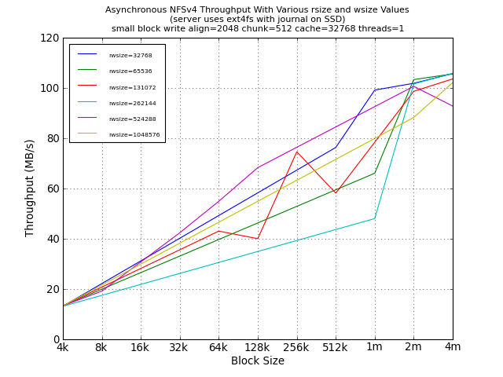
Large Block Tests
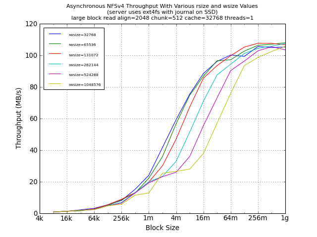
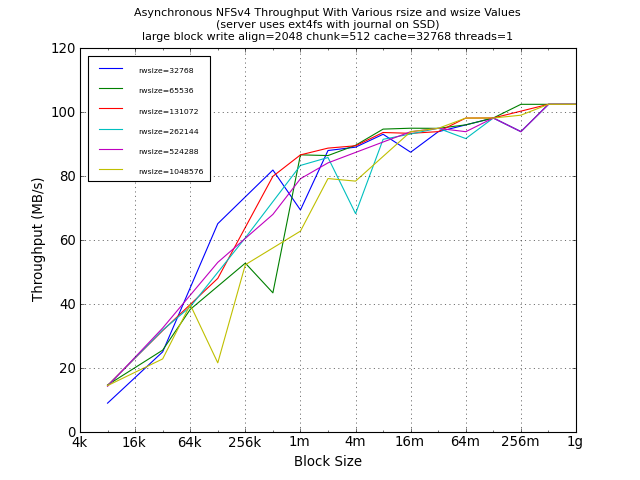
Synchronous with 32-threads and r/wmem* Changes
Small Block Tests
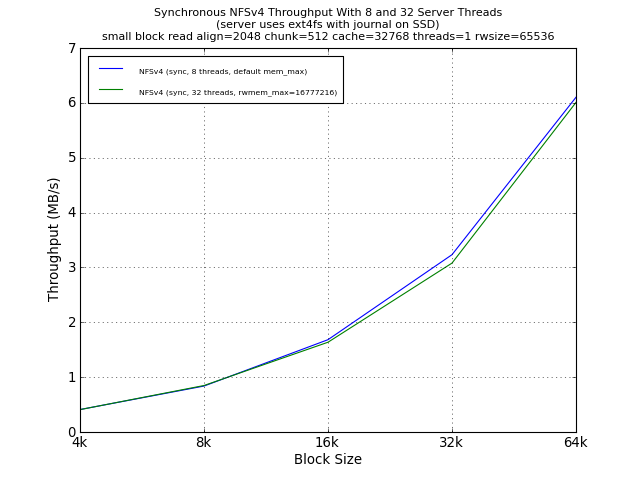
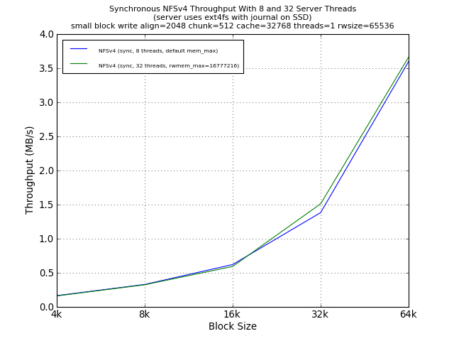
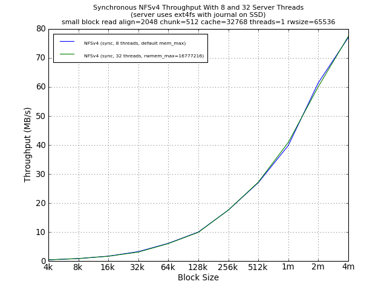
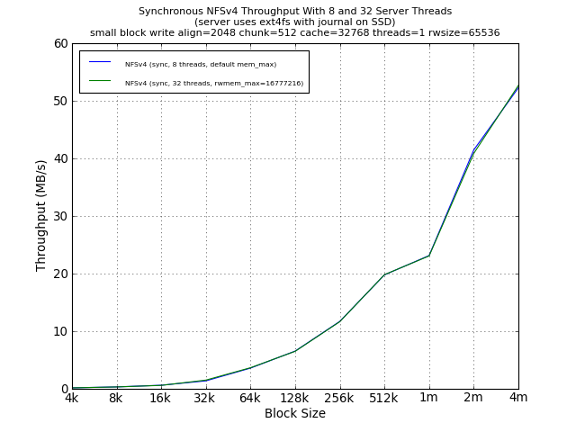
Large Block Tests
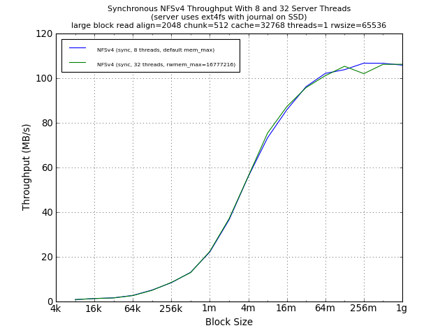
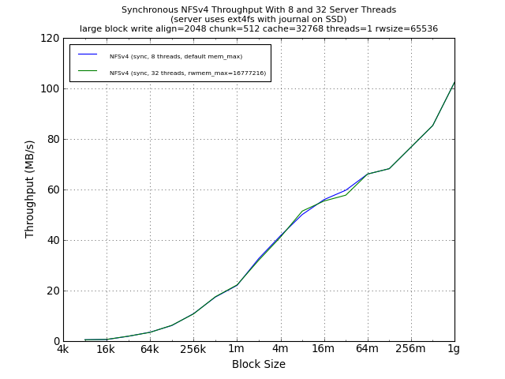